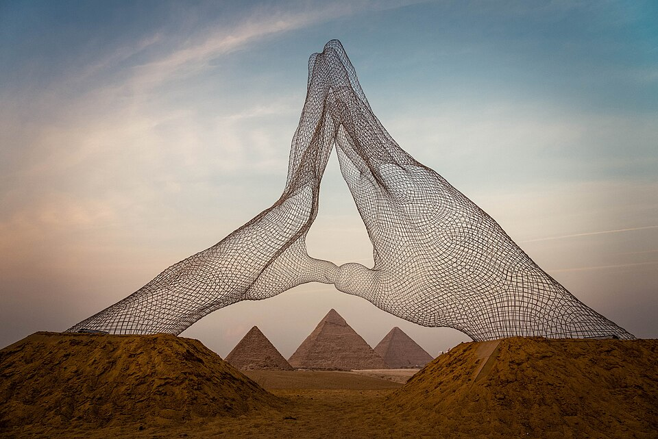

Великая пирамида Хуфу
Некрополь Гизы — величайший на плато у Ливийской пустыни, в 8 км от Каира. Главная — пирамида Хуфу (Хеопса) из IV династии, около 2560 года до н. э.: основание около 230 м, первоначальная высота около 146,6 м, блоков — около 2,3 млн. Лица точно ориентированы на стороны света, вход — на северной; облицовка из полированного белого известняка позже растащена местными жителями. Пирамида Хуфу — единственное сохранившееся чудо древнего мира; до 1880 года (Кёльнский собор) оставалась самым высоким зданием планеты.
Внутри пирамиды
Внутри — три камеры. Ниже основания — незавершённая подземная, под вершиной — «Камера царицы». Главная — Царская палата: стены из отшлифованного гранита, потолок из девяти тяжёлых монолитов, над ней пять «разгружающих» камер, верхняя — двускатной крышей — принимает вес кладки, чтобы усыпальница не рухнула; в западной стене — пустой гранитный саркофаг. К ней ведёт Большая галерея: 47 м длиной, 8,5 м высотой, стены — известняк, уложенный в восемь слоёв.
В 820 году халиф Мамун, искавший сокровища, велел вскрыть пирамиду: от северной стены пробили туннель, обошедший «пробку», — до самой Большой галереи. Им пользуются до сих пор; первоначальный вход выше, на северной стороне.
Хафра, Менкаур и Сфинкс
Меньше двухсот метров к юго-западу — пирамида Хафры (Хефрена), лицо которого носит Великий сфинкс, стоящий на восточной стороне комплекса; при Хафре сохранился лучший из долинных храмов Гизы. Дальше на юго-запад — самая скромная, пирамида Менкаура: основание 108 м, высота около 66 м; треть её была облицована красным гранитом из Асуана, а фараон не дожил до конца строительства. В его заупокойном храме — монолит весом более 200 тонн, самый тяжёлый на плато.
Кто строил пирамиды
Пирамиды строили не рабы. К западу от комплекса — деревня строителей: казармы, пекарни, кухни, развалины длинных комнат. Строители получали пайки хлеба и мяса, были устроены в бригады — в надписях их звали «друзья Хуфу» и «пьяницы Менкаура» — и с почестями хоронили у подножия. Блоки таскали на санях: на рельефе из гробницы Джехутинакхта воду льют перед полозьями, чтобы сани легче скользили. Камень резали медными орудиями, гранит возили из Асуана. Как поднимали пирамиду — прямой, спиральной или внутренней наклонной — спорят до сих пор.